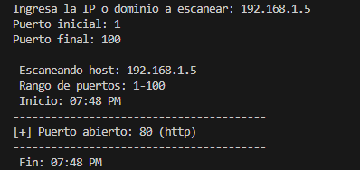

Riki Rosario Mariñez
Pentesting
Ingeniero de Sistemas Computacionales
Pentesting
Ingeniero de Sistemas Computacionales
Mi nombre es Riki Rosario, soy Ingeniero de Sistemas Computacionales con experiencia en soporte técnico, redes, ciberseguridad y bases de datos. Apasionado por el pentesting, con habilidades en Python, Linux y soluciones empresariales. Busco aportar valor en entornos exigentes con soluciones eficientes y seguras.
Puede ver mis certificados haciendo click aqui.
◉ MORTEROS DE EUROPA - SOPORTE TECNICO (ACTUAL)
Encargado de soporte IT para tres sucursales (una de una asociación aliada).
◉ PICO DUARTE CARTON - SOPORTE TECNICO
Técnico de soporte y redes internas.

Generador de contraseñas aleatorias y robustas en Python, configurable según longitud y tipo de caracteres. Pensado para crear claves seguras y mitigar ataques por fuerza bruta.


Aplicación en Python que permite cifrar y descifrar archivos mediante técnicas criptográficas, protegiendo la confidencialidad de la información almacenada. Ideal para resguardar documentos sensibles.


Herramienta de escaneo de puertos desarrollada en Python que identifica servicios activos en una red local o remota. Útil para pruebas de pentesting básico y auditorías de seguridad.
Script que analiza la fortaleza de contraseñas evaluando criterios como longitud, uso de caracteres especiales, números y letras mayúsculas. Útil para mejorar prácticas de seguridad en usuarios finales.

Un blog en la web ofrece numerosas aplicaciones, desde la generación regular de contenido valioso para atraer y retener audiencia, hasta facilitar la comunicación bidireccional con los lectores a través de comentarios y redes sociales. Además de contribuir al posicionamiento en motores de búsqueda, el blog sirve como herramienta de marketing de contenidos, branding, y puede ser una fuente de ingresos mediante publicidad o la venta de productos.